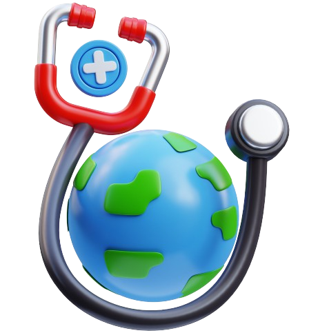

O projeto "Tamo Junto" surgiu quando nos deparamos com mais uma campanha do emocentro alertando sobre o esgotamento do estoque de sangue que poderia ocorrer a qualquer momento. Visando manter uma constante na entrada de sangue que superasse a saída, buscamos entender os motivos principais que impediam as pessoas de serem doadores assíduos. Descobrimos que muitas não possuem meios de locomoção para se dirigir até o emocentro mais próximo, muitas vezes em outra cidade. A solução foi criar um sistema de oferta de caronas para a demanda que existia.
